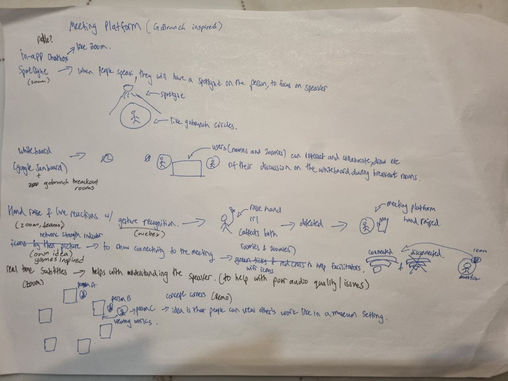
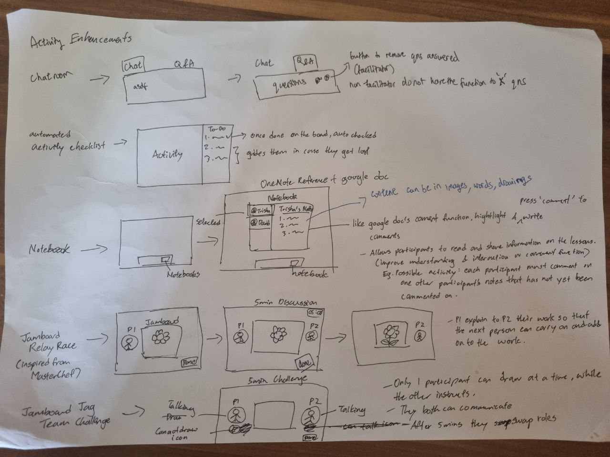
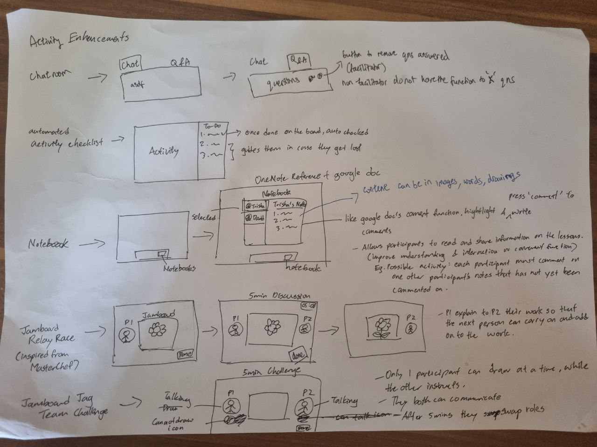

Ideation
The different phases for the ideation of our platform
Background
Technology Coaching is a premier educational platform that specializes in teaching digital skills to small businesses and educational institutions. Their unique approach is to tailor-make courses to suit their client's specific needs.
- Customized Courses: They offer a blend of face-to-face workshops and online training sessions, allowing for a flexible learning environment.
- Holistic Approach: Their focus is on helping individuals not only master various digital disciplines but also build confidence with technology.
Challenges
The COVID-19 pandemic propelled a shift towards hybrid training sessions, leading to a new set of challenges for Technology Coaching. Their key concern is ensuring effective engagement between the 'Zoomies' (remote attendees) and the 'Roomies' (on-site attendees). The need to cater to students with different technology literacy levels and diverse learning materials adds another layer of complexity.
- Hybrid Training Sessions: Balancing engagement between remote and on-site attendees is crucial for a productive learning experience.
- Diverse Learner Base: Participants' varied technology literacy levels require adaptive teaching strategies.
- Wide Content Spectrum: Accommodating diverse learning content and materials within the hybrid training environment can be challenging.
Requirement Gathering
Initial Contact
To understand our client's needs and their environment better, we drafted a comprehensive list of questions. Sending these via email before our face-to-face meeting served two key purposes:
- Allowed our client to consider the questions in depth and gather necessary information.
- Ensured an efficient and productive face-to-face meeting with our client by establishing a clear agenda.
Questions Posed
These are the questions that we asked, aiming to understand the structure, content, audience, challenges, and objectives of Technology Coaching's training sessions:
- Can you provide an overview of the specific topics and digital disciplines covered in Technology Coaching’s training sessions? What are the key learning objectives for participants?
- What materials and resources are currently used during the training sessions to enhance engagement and collaboration? Are there any constraints or limitations in terms of accessing or utilizing these materials in a hybrid setting?
- Who are the primary target audiences for the training sessions? Are there any specific demographics or industries that Technology Coaching focuses on? (Age groups, technical proficiency of participants, and disabilities to assess the feasibility of the solution)
- How do Technology Coaching’s face-to-face workshops and online training sessions differ in terms of content delivery and engagement techniques? Are there any challenges in maintaining consistency and interaction across both formats?
- Any specific requirements or preferences for maintaining a collaborative environment between “zoomies” and “roomies” during the hybrid training sessions? Are there certain tasks or activities that are particularly effective in fostering teamwork? (E.g. Technical limitations, communication barriers, or difficulties in maintaining interaction between remote and in-person participants)
- How do you currently assess participant engagement and understanding of the materials covered? (Metrics used to measure the effectiveness of the training sessions)
- Are there any technical or logistical/budget constraints that need to be considered during the hybrid training sessions? For example, limitations in internet bandwidth, equipment availability, or room setup for in-person participants.
- Are there any specific goals or outcomes that Technology Coaching aims to achieve in terms of engagement during the hybrid training sessions? How do these align with the broader objectives of the training programs?
- Is a technical solution or framework needed for the hybrid training sessions?
Client Meeting and Findings
After a fruitful face-to-face meeting with Ms. Sooz, our client, we uncovered several key issues and considerations:
- Internet Connectivity: Challenges for hybrid classes in rural areas due to weak internet connections.
- Privacy Concerns: Minimal data should be collected from clients, but customer system restrictions can limit content access.
- Participant Issues: Some participants have limited IT familiarity. Zoom housekeeping rules include mandatory video and muting when not speaking.
- Facilitator Challenges: Facilitators need to manage multiple devices and variable locations and timings, on top of engaging both roomies and zoomies.
- Q&A Session: This session allowed us to delve deeper into attempts made by Technology Coaching to address these challenges
Defining Our Approach
Upon discussing our findings with our professor and tutor, we decided to focus on crafting an environment that makes roomies and zoomies feel like they are physically together. While we acknowledge that some challenges, like internet connectivity, fall beyond our project's scope, we're dedicated to finding feasible solutions that enhance engagement in hybrid training sessions.
Conceptualization Journey
Section 1: Exploring Initial Ideas
Our team embarked on a journey to uncover innovative solutions to create a dynamic and inclusive learning environment for both “zoomies” (remote learners) and “roomies” (on-site learners). We explored various platforms and tools, zeroing in on two promising options: Roblox and here.fm.
-
Roblox
- Visual Connection: We use live streaming techniques to ensure all participants, whether physically present or online, can visualize each other, fostering a sense of inclusiveness and unity.
- Integrated Chat: Real-time communication is enabled through the integrated chat feature, ensuring everyone can follow the conversation and contribute their ideas..
- Lessons (Slides): Lesson materials or presentation slides are synchronously displayed to all participants, maintaining the flow of the lesson and ensuring equal access to information.
- Activities: We leverage the customizable avatar feature in Roblox to carry out group activities that bridge the virtual-physical gap and enhance collaborative learning.
- Timer: A visible timer is used to keep everyone in sync, particularly during activity sessions, ensuring everyone is aware of when the activity will end.
-
here.fm
- Icon Representation: We use live streaming techniques to ensure all participants, whether physically present or online, can visualize each other, fostering a sense of inclusiveness and unity.
- Customizable Environment: We use live streaming techniques to ensure all participants, whether physically present or online, can visualize each other, fostering a sense of inclusiveness and unity.
- Lessons & Activities: We use live streaming techniques to ensure all participants, whether physically present or online, can visualize each other, fostering a sense of inclusiveness and unity.
Section 2: Feedback and Changing Course
Our initial conceptualization process involved exploring and expanding upon existing platforms such as Roblox and Here.fm. However, following client feedback and consultations, our team underwent a significant course change.
- Internet Connectivity: Challenges for hybrid classes in rural areas due to weak internet connections.
- Privacy Concerns: Minimal data should be collected from clients, but customer system restrictions can limit content access.
- Participant Issues: Some participants have limited IT familiarity. Zoom housekeeping rules include mandatory video and muting when not speaking.
- Facilitator Challenges: Facilitators need to manage multiple devices and variable locations and timings, on top of engaging both roomies and zoomies.
- Q&A Session: This session allowed us to delve deeper into attempts made by Technology Coaching to address these challenges
As a result of these course corrections, our team embarked on a redesign of our initial concept, focusing on creating a unique tool that could seamlessly integrate into the company's existing tech stack and lesson delivery style.
Section 3: Revisiting the Drawing Board
We took a step back to recalibrate our ideas and immerse ourselves in the user's experience. To better understand the client's needs and the intricacies of hybrid meetings, our team adopted a hands-on approach by simulating a meeting scenario through a role-playing strategy.
Problems identified through our prototype filming provided crucial insight for our revised conceptualization process.
- Audio Feedback: We use live streaming techniques to ensure all participants, whether physically present or online, can visualize each other, fostering a sense of inclusiveness and unity.
- Inclusivity Issues: Real-time communication is enabled through the integrated chat feature, ensuring everyone can follow the conversation and contribute their ideas..
- Facilitator Confusion: Lesson materials or presentation slides are synchronously displayed to all participants, maintaining the flow of the lesson and ensuring equal access to information.
- Screen Sharing Difficulties: We leverage the customizable avatar feature in Roblox to carry out group activities that bridge the virtual-physical gap and enhance collaborative learning.
With the new insights, we refocused our efforts on ideating features that directly address the identified challenges.
Section 4: Final Ideation
Our team embarked on a journey to uncover innovative solutions to create a dynamic and inclusive learning environment for both “zoomies” (remote learners) and “roomies” (on-site learners). We explored various platforms and tools, zeroing in on two promising options: Roblox and here.fm.
 

Drawing on our experience from the role-play and the challenges identified, our team conceptualized several features divided into three main categories: meeting platform, quizzes, and activities. We drafted our ideas out on paper first. Afterward, we start creating the prototype for these ideas.